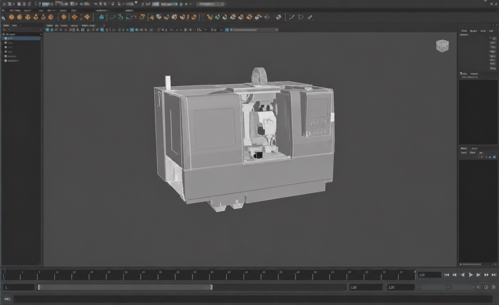
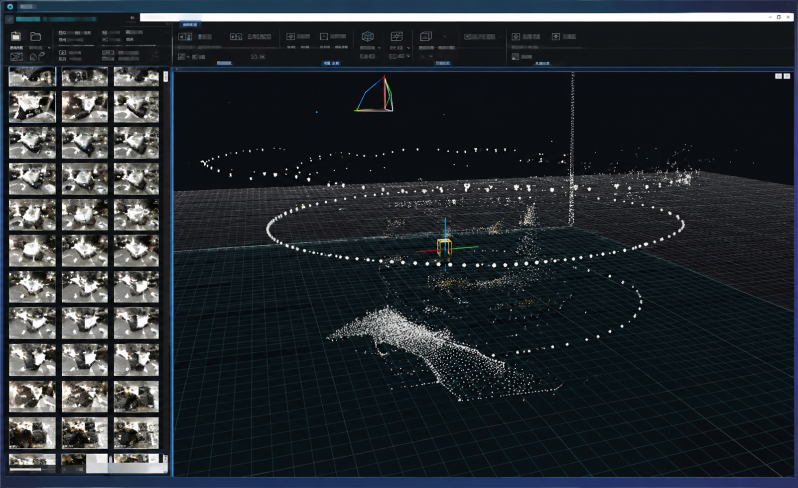
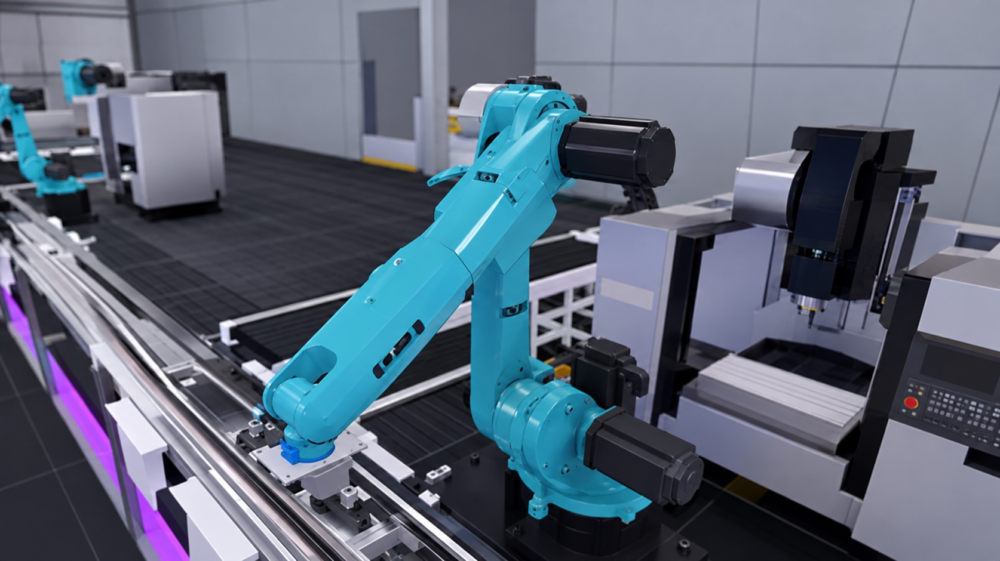
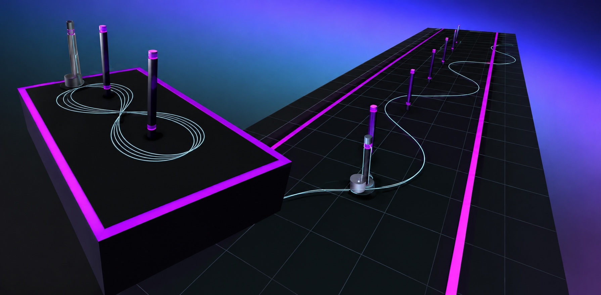
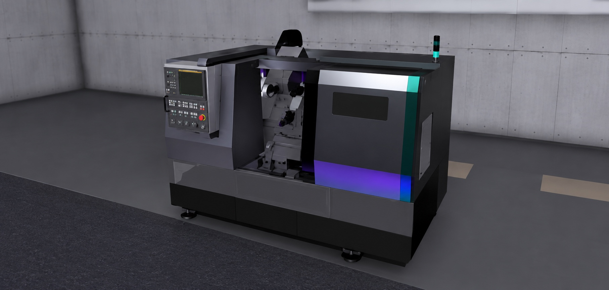
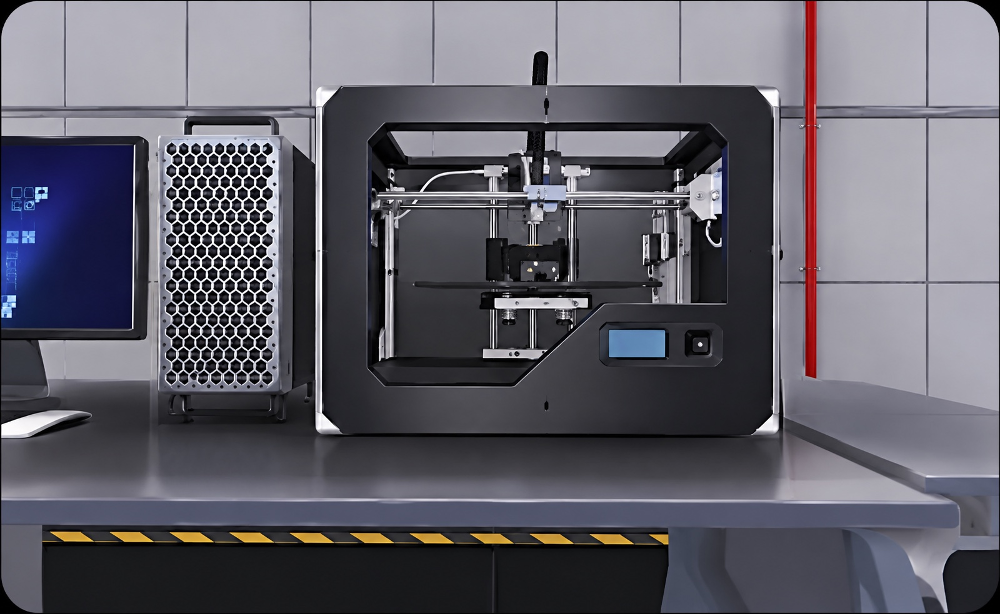
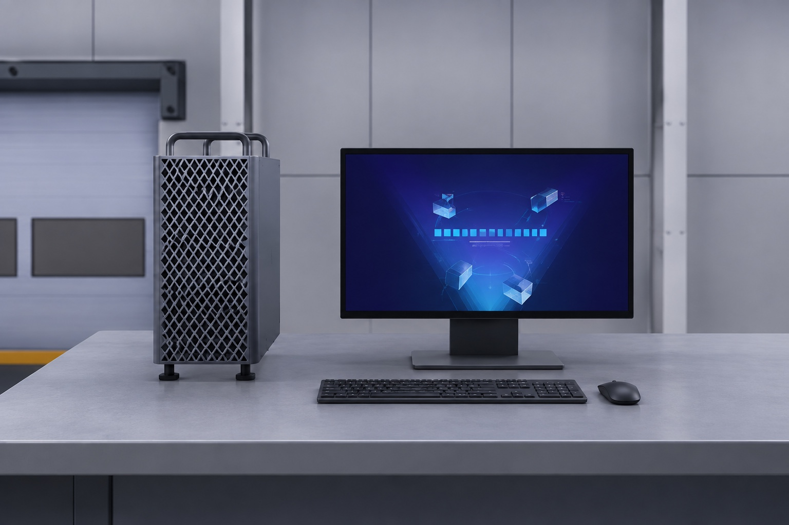

Total of 11 national-level honors, all as first author or project lead. Selected awards:
National 1st PrizeNational College Innovation and Entrepreneurship Project; 1st in Central South University.
National 2nd PrizeChina Engineering Practice and Innovation Ability Competition; 1st in Hunan Province.
National 2nd PrizeNational Collegiate Computer Design Contest; 1st in Hunan Province.
National 2nd PrizeCross-Strait Computer Works Competition; 1st in Hunan Province.
Entrepreneurship
Engineering Training Virtual Simulation Platform
An interactive engineering training platform combining 3D reconstruction, physical simulation, and digital twins. Funded by the first batch of Hunan Province College Student Innovation and Entrepreneurship Fund.

3D reconstruction
Reconstruct an equipment model from 180 photographs.

Hierarchical sampling
Inspect sampled geometry within the reconstruction workspace.

Interactive operation
Operate virtual equipment within the training environment.

Physics simulation
Explore motion and physical behavior in a virtual test scene.

Detailed equipment models
Explore the geometry and structure of industrial equipment.

Machine environment
Inspect the machine workspace and its internal components.

Virtual machine
Access a virtual computer inside the simulation environment.
Apple Vision Pro
A spatial interface concept for immersive engineering training.